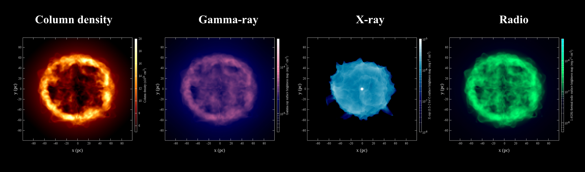

Siddhartha Gupta
Welcome
Research highlights
Curriculum vitae
From where ?
Academic Journey
I have recently joined a postdoctoral research associate position in the Dept of Astrophysical Sciences at Princeton University.
I relocated to Chicago to join postdoctoral scholar position at the University of Chicago until August 2023.
I moved to Bengaluru to join my PhD graduate school at the Indian Institute of Science (IISc), Bengaluru. I was enrolled under the Joint Astronomy Programme (JAP) as a prestigious Shyama Prasad Mukherjee (SPM) research fellow. As a graduate student in the JAP, I worked with Prof. Biman Nath at Raman Research Institute (RRI) and Prof. Prateek Sharma at IISc, India.
Pursuing Master of Science (MSc) in the dept of Physics at Indian Institute of Technology Kharagpur (IIT Kgp) was the most important time in my academic carrier. During a one-year long project with Prof. Sayan Kar, I decided to take theoretical astrophysics as a broad area of research. I completed MSc in 2014 with a first rank in the physics dept, and left IIT kgp to explore my area of interest.
I developed a passion for Physical Science and Mathematics during my school years. I pursued a career in Physics at
Academic+ Journey!

Interests
- Kinetic Plasmas
- Cosmic rays
- Numerical methods
- Gravity
Collaborators
Damiano Caprioli (Postdoc advisor), University of Chicago, IL, USA. Colby Haggerty, University of Hawaii, USA Andrea Mignone, University of Torino, Italy. Biman Nath (PhD advisor), Raman Research Insitute Bangalore, India. Prateek Sharma (PhD advisor), Indian Institute of Science Bangalore, India. Yuri Shchekinov, Lebedev Physical Institute Moscow, Russia. Anatoly Spitkovsky (Postdoc advisor), Princeton University, NJ, USA.
Research summary
To know our contributions, click on the tabs below.Energetic charged particles, commonly referred to as cosmic rays, are one of the main contributors to the nonthermal energies in the universe. Although diffusive shock acceleration (DSA) is the promising mechanism for particle acceleration at shocks, the processes that promote electrons to DSA remain unclear. To solve this problem, we have performed first-principles kinetic particle-in-cell simulations of collisionless shocks, exploring a wide range of shock speeds, Alfvénic, and sonic Mach numbers. I will report under which conditions electrons participate in the DSA at quasi-parallel shocks. The results are key to understanding the nonthermal phenomenology of a variety of heliophysical/astrophysical sources that shine in radio, X-rays, and gamma-rays. Ref. 1. Gupta et al (2023); [NASA/ADS]; ICRC 2023 proceeding; arXiv
A strong super-Alfvénic drift of energetic particles (or cosmic rays) in a magnetized plasma can amplify the magnetic field significantly through nonresonant streaming instability (NRSI). While the traditional analysis is done for an ion current, here we use kinetic particle-in-cell simulations to study how the NRSI behaves when it is driven by electrons or by a mixture of electrons and positrons. In particular, we characterize the growth rate, spectrum, and helicity of the unstable modes, as well the level of the magnetic field at saturation. Our results are potentially relevant for several space/astrophysical environments (e.g., electron strahl in the solar wind, at oblique nonrelativistic shocks, around pulsar wind nebulae), and also in laboratory experiments. Ref. 1. Gupta et al (2021); [NASA/ADS]; ApJ; arXiv 2. Gupta et al (2022); [NASA/ADS]; ICRC 2021 proceeding; arXiv
Cosmic rays (CRs) are frequently modelled as an additional fluid in hydrodynamic (HD) and magnetohydrodynamic (MHD) simulations of astrophysical flows. The standard CR two-fluid model is described in terms of three conservation laws (expressing conservation of mass, momentum, and total energy) and one additional equation (for the CR pressure) that cannot be cast in a satisfactory conservative form. The presence of non-conservative terms with spatial derivatives in the model equations prevents a unique weak solution behind a shock. We investigate a number of methods for the numerical solution of the two-fluid equations and find that, in the presence of shock waves, the results generally depend on the numerical details (spatial reconstruction, time stepping, the CFL number, and the adopted discretization). All methods converge to a unique result if the energy partition between the thermal and non-thermal fluids at the shock is prescribed using a subgrid prescription. This highlights the non-uniqueness problem of the two-fluid equations at shocks. From our numerical investigations, we report a robust method for which the solutions are insensitive to the numerical details even in absence of a subgrid prescription, although we recommend a subgrid closure at shocks using results from kinetic theory. The subgrid closure is crucial for a reliable post-shock solution and also its impact on large-scale flows because the shock microphysics that determines CR acceleration is not accurately captured in a fluid approximation. Critical test problems, limitations of fluid modelling, and future directions are discussed. Ref. 1. Gupta et al (2020); [NASA/ADS]; MNRAS; arXiv
Cosmic ray (CR) sources leave signatures in the isotopic abundances of CRs. Current models of Galactic CRs that consider supernovae (SNe) shocks as the main sites of particle acceleration cannot satisfactorily explain the higher 22Ne/20Ne ratio in CRs compared to the interstellar medium. Although stellar winds from massive stars have been invoked, their contribution relative to SNe ejecta has been taken as a free parameter. Here, we present a theoretical calculation of the relative contributions of wind termination shocks (WTSs) and SNe shocks in superbubbles, based on the hydrodynamics of winds in clusters, the standard stellar mass function, and stellar evolution theory. We find that the contribution of WTSs towards the total CR production is at least 25 percent, which rises to ≳ 50 per cent for young (≲10 Myr) clusters, and explains the observed 22Ne/20Ne ratio. We argue that since the progenitors of apparently isolated supernovae remnants (SNRs) are born in massive star clusters, both WTS and SNe shocks can be integrated into a combined scenario of CRs being accelerated in massive clusters. This scenario is consistent with the observed ratio of SNRs to γ-ray bright (Lγ ≳ 1e35 erg/s) star clusters, as predicted by star cluster mass function. Moreover, WTSs can accelerate CRs to PeV energies, and solve other long-standing problems of the standard SN paradigm of CR acceleration. Ref. 1. Gupta et al (2020) MNRAS 493, 3159; [NASA/ADS]; MNRAS; arXiv
Winds and supernovae drive shocks and produce all necessary conditions to accelerate high energy particles (e.g. Cosmic rays (CRs)). Despite the observations over a century, there are many aspects of CRs that are still unknown, e.g. from where do they come from? are they accelerated in supernova shocks or in stellar winds? To understand this problem, we have developed an analytical model and performed 1D and 3D simulations. We have calculated various observables which will be useful to understand high energy activity in star clusters. Paper I: We develop a two-fluid model of an interstellar bubble (ISB) where cosmic rays are considered as the second fluid. We show that diffusive shock acceleration can be an effective process in changing the thermal properties of an ISB. Movie 2 shows the time evolution of thermal and CR pressure profiles in a two-fluid interstellar bubble. The enhancement of CR pressure at the reverse shock (wind termination shock) represents the diffusive shock acceleration. Once the CR pressure becomes larger than thermal pressure, the shock becomes very smooth representing the globally smooth solution of the two-fluid model. This simulation is performed using a code which is written by me. Details of the code can be found here. Paper II: In continuation with Paper I, we estimate gamma-ray, x-ray, and radio (thermal and nonthermal) luminosities and compare them with observations. In this study, we show how a compact star cluster can produce diffuse gamma-ray. We also discuss the role of thermal and non-thermal radio, and X-rays in constraining the high energy activity in young star clusters. Movie 3 displays the surface brightness map of an ISB in multi-waveband. 
Star clusters are one of the most energetic sources in a galaxy. They emit wind and radiation which are so energetic that they can expel gas from their vicinity. Observers have found such gas expulsion, however, the driving mechanism was not clear.
We have studied this problem by considering the time evolution of a star cluster. We use a realistic Initial Mass Function (IMF) and include stellar winds (source of mechanical energy) and radiation in our analysis. After ~3 Myr when one-by-one massive stars die through supernova explosion, they also provide mechanical energy. However, the radiation power decreases with time. Therefore, the contribution from wind and radiation depend on the age of the star cluster. Using 1D numerical simulations, we show that radiation pressure can push the gas before 1 Myr. After 1 Myr, the expansion is controlled by mechanical power and radiation heating. Movie 1, shown here, displays the time evolution of various profiles due to interactions of stellar wind and radiation with the ambient medium.
Ref: Gupta et al. (2016) MNRAS, 462, 4532; [NASA/ADS]; MNRAS; arXivMy MSc thesis was focused on the applications of a modified Newtonian gravity in various astrophysical objects. This study involved a phenomenological approach which combines strong field and weak field gravities. With my advisor, Prof. Sayan Kar at IIT Kgp, we investigated the non-singular collapse of gas cloud and galaxy rotation curve. Ref. 1. Gupta, S. 2014, MScThesis, IIT Kharagpur.
Selected posters
1. 9-13th May 2016 at the annual Meeting of Astronomical Society of India at Srinagar, India. [PDF] 2. January 2018 in the Plasma Workshop at the Indian Institute of Science, Bangalore, India. [PDF] 3. 26 july - 3rd August 2023 at 38th International Cosmic Ray Conference, Nagoya, Japan. [PDF]Publications
Google scholar Researchgate arXiv NASA ADSA 3D simulation of a compact star cluster
Kinetic plasma instability
Electron-Proton Collisionless Shock
Until now, I have used the following codes in my research projects
Magneto-hydrodynamic simulations
-
PLUTO (programming language C, python interface)
-
SHOBDO (C, python interface)
-
ZEUS-MP (fortran75)
PLUTO is a multi-dimensional code, develoved by Prof. A. Mignone + Group. For details visit PLUTO.
It is a two-fluid hydro code written by me to study gas + cosmic ray shock. For details, click here SHOBDO.
This is one of the popular codes in astrophysics. Details can be found here.
Kinetic simulations
-
Tristan-MP (fortran90)
-
Konica (C, python interface)
It is a Particle-In-Cell code. The details can be found here.
Under construction.
Analysis codes
-
fluid (C)
-
particles (python)
This is written by me for analyzing data files for the PLUTO and Shobdo codes. Under construction.
For analyzing output of Tristan-MP and KonicaUnder construction.
Visualizations
-
MYTH (python)
For Three-D visualization. MYTH is a multipurpose YT-rendering code especially designed to compile the yt-rendering. For details, click here MYTH.
C header files
It is always good to have your own header files.Office
Dept of Astrophysical Sciences
Princeton University
4 Ivy Ln, Princeton, NJ 08544, United States
Email : gsiddhartha@princeton.edu